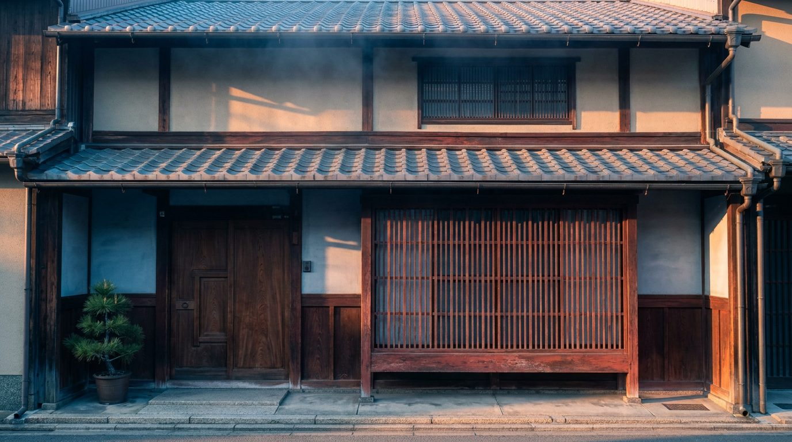
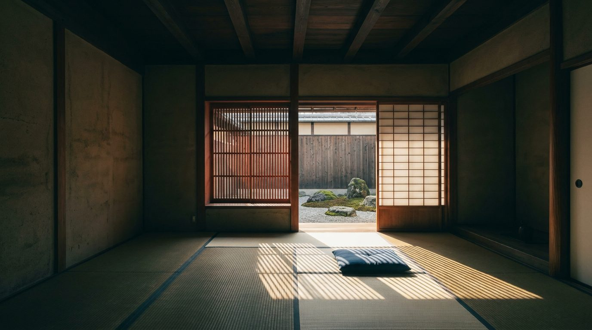

Atlante · INT-JP-02 · Giappone · Asia
Casa a Kyoto con engawa sul giardino secco e graticcio rosso bengara
Esempi · esterno e interno


Perché funziona
Entrambi per costruzione: la materia è quieta (calce, cedro, tatami) e un solo elemento è loud, il graticcio tinto di bengara che accende il fronte e ordina la luce in strisce. Il cliente di Kyoto compra profondità e ombra, non superficie: la casa è lunga venti metri e la città resta fuori. Per Poetica serve a mostrare che il lusso giapponese non è il vuoto bianco ma la sequenza di soglie, e che il made in Italy può stare seduto su un tatami senza diventare arredo da albergo. Non deve scivolare nel tempio finto: niente bonsai scenografici, niente bambù in vaso, niente grade verde.
Architettura · elementi riproducibili
- engawa in tavole di cedro 3000x900 mm a +450 mm sul giardino, bordo 60 mm
- graticcio kōshi 900x1800 mm, listelli 30x30 mm a passo 60 mm, tinto bengara
- finestra mushiko mado 900x600 mm, intonaco a vista, listelli 20 mm
- tsuboniwa 3000x2400 mm, ghiaia 20-30 mm rastremata, tre pietre da 400 a 900 mm
- shōji 900x1800 mm a modulo, telaio 30 mm, carta washi, binario incassato
- travi a vista 120x120 mm a interasse 900 mm, soffitto a 2550 mm
- kura sul fondo 2400x3600 mm, muri in terra 300 mm, tetto in tegole 200 mm
Fatto verificato: il tipico machiya di Kyoto è una casa in legno lunga, con fronte stretto di 5,4-6 m e profondità di 20 m, soprannominata unagi no nedoko, con uno o più tsuboniwa; la bottega (mise no ma) stava sul fronte e lo zashiki di fondo guardava il giardino, con il magazzino kura oltre.
Fatto verificato: l'engawa è una fascia di pavimento non coperta da tatami, in legno o bambù, posta fuori dagli shōji e dentro le persiane amado, e serve a stare aperti su pioggia e sole senza bagnarsi.
Fatto verificato: il giardino secco (karesansui) è piccolo, chiuso da muri o edifici, si guarda seduti da un unico punto come il portico dello hōjō, e usa ghiaia rastremata per rappresentare l'acqua.
Valutazione: il contrasto con int-jp-01 è di luce e di pianta, perché qui la casa è profonda e la luce attraversa un graticcio prima di toccare il tatami; il rischio è lo japandi da catalogo, quindi bengara e ghiaia devono restare leggibili.
Luce
Prompt di generazione (EN)
Interior of a restored Kyoto machiya, the rear zashiki looking out to a small dry garden. 2.55 m ceiling with exposed cedar beams 120 x 120 mm at 900 mm centres, aged tatami 1820 x 910 mm, clay plaster walls, a 900 x 1800 mm cedar lattice screen stained red ochre, washi shoji sliding in 900 mm modules, a cedar engawa 900 mm deep raised 450 mm above a courtyard of raked river gravel with three set stones. Only a low 120 mm floor cushion. One key light: low morning sun from the east at 22 degrees through the lattice, striping the tatami with hard parallel bars, gravel raking catching oblique light, deep cool shade inside, 3400 K. 35 mm lens at 1.10 m, two-point perspective, parallel verticals, muted grade. no people, no text, no logos.